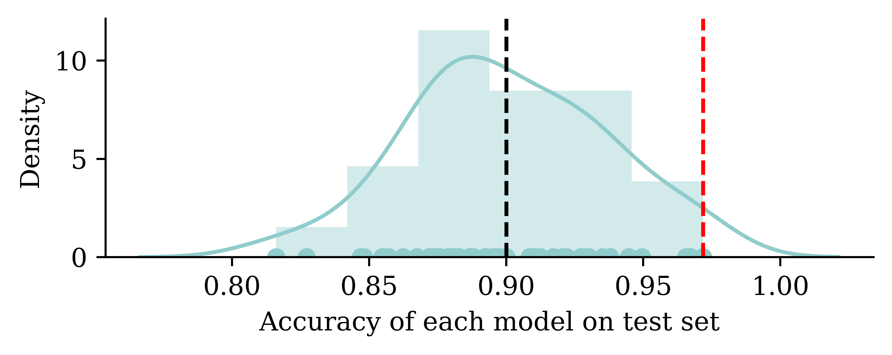
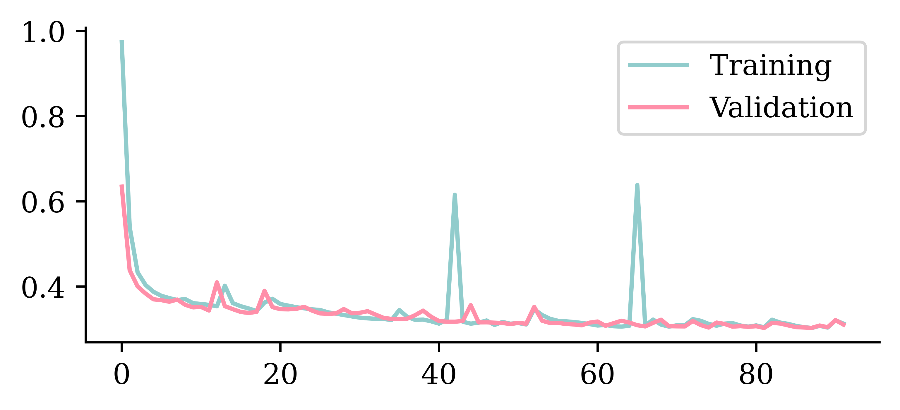
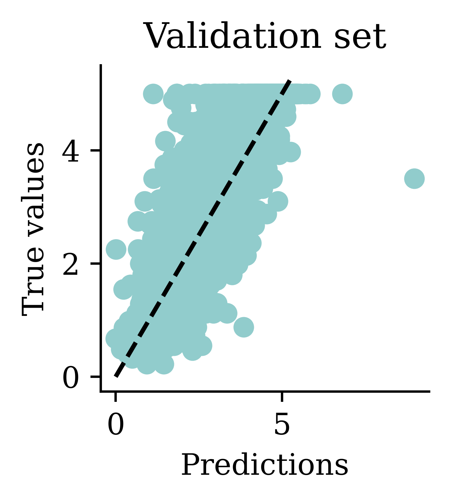
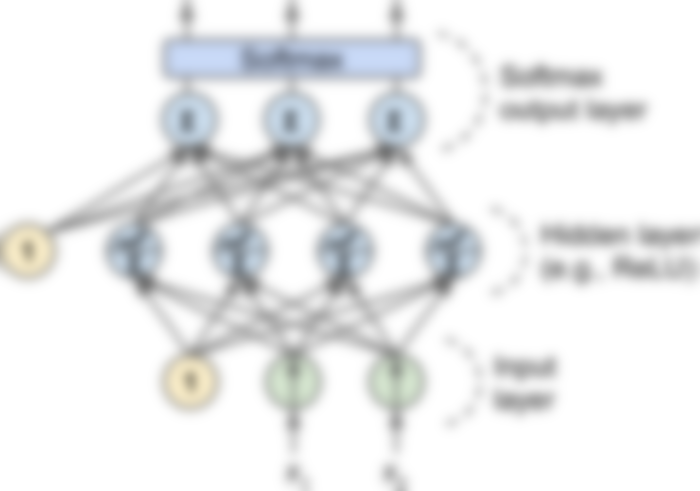
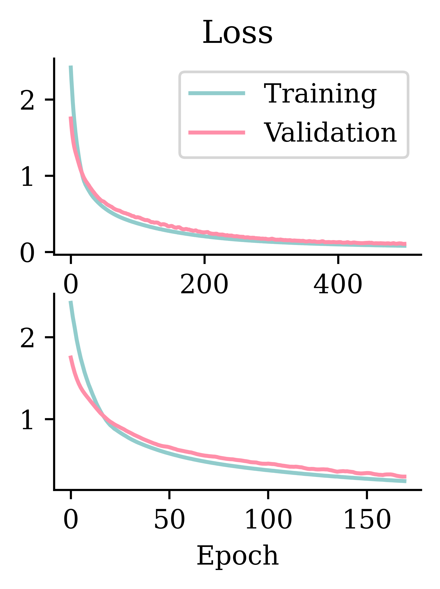
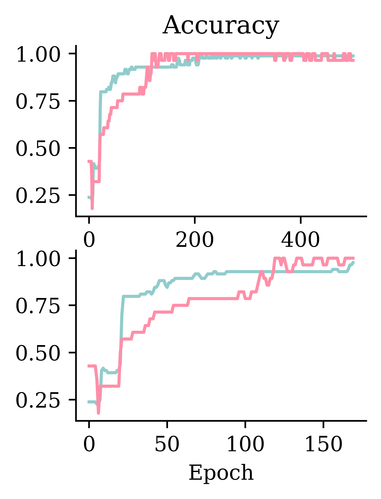
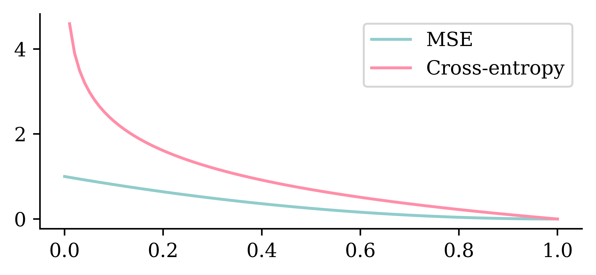

Mathematics of Deep Learning
ACTL3143/5111: Deep Learning for Actuaries
Dr Patrick Laub
Week 3
Lecture Outline
- Early stopping
- Classification
- Poisson loss and SW #2
- Optimisation
- Python: Objects, classes, lambdas
Thurs office hours (Outlook).
Load packages
Validation Sets
California housing dataset
| MedInc | HouseAge | AveRooms | AveBedrms | Population | AveOccup | Latitude | Longitude | |
|---|---|---|---|---|---|---|---|---|
| 6939 | 3.6875 | 36.0 | 5.327526 | 1.010453 | 1271.0 | 4.428571 | 33.99 | -118.10 |
| 8032 | 4.2917 | 44.0 | 4.970930 | 0.968023 | 786.0 | 2.284884 | 33.83 | -118.13 |
| 18877 | 2.4875 | 26.0 | 4.556477 | 1.033161 | 2539.0 | 2.631088 | 38.09 | -122.23 |
Questions to answer in ML project
You fit a few models to the training set, then ask:
- (Selection) Which of these models is the best?
- (Future Performance) How good should we expect the final model to be on unseen data?
Basic ML workflow

Splitting the data.
- For each model, fit it to the training set.
- Compute the error for each model on the validation set.
- Select the model with the lowest validation error.
- Compute the error of the final model on the test set.
Source: Wikipedia.
{kind=link}
Diviser en trois (split three ways)
# Thanks https://datascience.stackexchange.com/a/15136
X_main, X_test, y_main, y_test = \
train_test_split(features, target, test_size=0.2, random_state=1)
# As 0.25 x 0.8 = 0.2
X_train, X_val, y_train, y_val = \
train_test_split(X_main, y_main, test_size=0.25, random_state=1)
X_train.shape, X_val.shape, X_test.shape((12384, 8), (4128, 8), (4128, 8))Retrain last week’s models
… on the new train set (just showing the last one here).
sc = StandardScaler()
sc.fit(X_train)
X_train_sc = sc.transform(X_train)
X_val_sc = sc.transform(X_val)
X_test_sc = sc.transform(X_test)
tf.random.set_seed(1234)
model = Sequential([
Dense(30, activation="relu"),
Dense(1, activation="exponential")
])
model.compile("adam", "mse")
%time hist = model.fit(X_train_sc, y_train, epochs=100, verbose=False)
mseTrain["Exp ANN"] = mean_squared_error(y_train, model.predict(X_train_sc))
mseVal["Exp ANN"] = mean_squared_error(y_val, model.predict(X_val_sc))CPU times: user 11.3 s, sys: 1.43 s, total: 12.8 s
Wall time: 9.86 sComparing on Week 2’s test val set
| Model | MSE | |
|---|---|---|
| 1 | Basic ANN | 0.796367 |
| 2 | Long run ANN | 0.627958 |
| 0 | Linear Regression | 0.541129 |
| 3 | Exp ANN | 0.329534 |
Comparing on validation set
| Model | MSE | |
|---|---|---|
| 2 | Long run ANN | 0.911223 |
| 1 | Basic ANN | 0.825256 |
| 0 | Linear Regression | 0.505942 |
| 3 | Exp ANN | 0.318163 |
Why not use test set for both?
Thought experiment: have \(m\) classifiers: \(f_1(\mathbf{x})\), \(\dots\), \(f_m(\mathbf{x})\).
They are just as good as each other in the long run \[ \mathbb{P}(\, f_i(\mathbf{X}) = Y \,)\ =\ 90\% , \quad \text{for } i=1,\dots,m . \]
Evaluate each model on the test set, some will be better than others.

Take the best, you’d think it has \(\approx 98\%\) accuracy!
Early Stopping
Choosing when to stop training

Illustrative loss curves over time.
Source: Heaton (2022), Applications of Deep Learning, Part 3.4: Early Stopping.
Try early stopping
Hinton calls it a “beautiful free lunch”
from tensorflow.keras.callbacks import EarlyStopping
tf.random.set_seed(1234)
model = Sequential([
Dense(30, activation="relu"),
Dense(1, activation="exponential")
])
model.compile("adam", "mse")
es = EarlyStopping(restore_best_weights=True, patience=10)
%time hist = model.fit(X_train_sc, y_train, epochs=1_000, \
callbacks=[es], validation_data=(X_val_sc, y_val), verbose=False)
print(f"Keeping model at epoch #{len(hist.history['loss'])-10}.")CPU times: user 14.7 s, sys: 2.29 s, total: 17 s
Wall time: 12.7 s
Keeping model at epoch #82.Loss curve
Predictions


Comparing models (validation set)
| Model | MSE | |
|---|---|---|
| 2 | Long run ANN | 0.911223 |
| 1 | Basic ANN | 0.825256 |
| 0 | Linear Regression | 0.505942 |
| 3 | Exp ANN | 0.318163 |
| 4 | Early stop ANN | 0.303163 |
Other callbacks
from tensorflow.keras.callbacks import ModelCheckpoint
tf.random.set_seed(1234)
model = Sequential([
Dense(30, activation="relu"),
Dense(1, activation="exponential")
])
model.compile("adam", "mse")
# On Colab, save models to Google Drive.
mc = ModelCheckpoint("best-model.h5", monitor="val_loss",
save_best_only=True)
es = EarlyStopping(restore_best_weights=True, patience=5)
hist = model.fit(X_train_sc, y_train, epochs=100, \
validation_split=0.1, callbacks=[mc, es], verbose=False)
!file best-model.h5 && du -sh best-model.h5best-model.h5: Hierarchical Data Format (version 5) data
28K best-model.h5Classification
Iris dataset
from sklearn.datasets import load_iris
iris = load_iris()
names = ["SepalLength", "SepalWidth", "PetalLength", "PetalWidth"]
features = pd.DataFrame(iris.data, columns = names)
features| SepalLength | SepalWidth | PetalLength | PetalWidth | |
|---|---|---|---|---|
| 0 | 5.1 | 3.5 | 1.4 | 0.2 |
| 1 | 4.9 | 3.0 | 1.4 | 0.2 |
| ... | ... | ... | ... | ... |
| 148 | 6.2 | 3.4 | 5.4 | 2.3 |
| 149 | 5.9 | 3.0 | 5.1 | 1.8 |
150 rows × 4 columns
Target variable
Split the data into train and test
| SepalLength | SepalWidth | PetalLength | PetalWidth | |
|---|---|---|---|---|
| 53 | 5.5 | 2.3 | 4.0 | 1.3 |
| 58 | 6.6 | 2.9 | 4.6 | 1.3 |
| 95 | 5.7 | 3.0 | 4.2 | 1.2 |
| ... | ... | ... | ... | ... |
| 145 | 6.7 | 3.0 | 5.2 | 2.3 |
| 87 | 6.3 | 2.3 | 4.4 | 1.3 |
| 131 | 7.9 | 3.8 | 6.4 | 2.0 |
112 rows × 4 columns
A basic classifier network
A basic network for classifying into three categories.
Source: Aurélien Géron (2019), Hands-On Machine Learning with Scikit-Learn, Keras, and TensorFlow, 2nd Edition, Fig. 10-09 (redacted).
Create a classifier model
NUM_FEATURES = len(features.columns)
NUM_CATS = len(np.unique(target))
print("Number of features:", NUM_FEATURES)
print("Number of categories:", NUM_CATS)Number of features: 4
Number of categories: 3Make a function to return a Keras model:
Fit the model
model = build_model()
model.compile("adam", "SparseCategoricalCrossentropy")
model.fit(X_train, y_train, epochs=5, verbose=2);Epoch 1/54/4 - 0s - loss: 2.2537 - 80ms/epoch - 20ms/stepEpoch 2/54/4 - 0s - loss: 2.0576 - 2ms/epoch - 574us/stepEpoch 3/54/4 - 0s - loss: 1.8848 - 2ms/epoch - 591us/stepEpoch 4/54/4 - 0s - loss: 1.7453 - 2ms/epoch - 499us/stepEpoch 5/54/4 - 0s - loss: 1.6297 - 2ms/epoch - 527us/stepTrack accuracy as the model trains
model = build_model()
model.compile("adam", "SparseCategoricalCrossentropy", \
metrics=["accuracy"])
model.fit(X_train, y_train, epochs=5, verbose=2);Epoch 1/54/4 - 0s - loss: 2.2537 - accuracy: 0.2857 - 89ms/epoch - 22ms/stepEpoch 2/54/4 - 0s - loss: 2.0576 - accuracy: 0.2857 - 2ms/epoch - 543us/stepEpoch 3/54/4 - 0s - loss: 1.8848 - accuracy: 0.2857 - 2ms/epoch - 471us/stepEpoch 4/54/4 - 0s - loss: 1.7453 - accuracy: 0.2857 - 2ms/epoch - 490us/stepEpoch 5/54/4 - 0s - loss: 1.6297 - accuracy: 0.2679 - 2ms/epoch - 495us/stepRun a long fit
model = build_model()
model.compile("adam", "SparseCategoricalCrossentropy", \
metrics=["accuracy"])
%time hist = model.fit(X_train, y_train, epochs=500, \
validation_split=0.25, verbose=False)CPU times: user 4.12 s, sys: 635 ms, total: 4.75 s
Wall time: 4.04 sEvaluation now returns both loss and accuracy.
Add early stopping
model = build_model()
model.compile("adam", "SparseCategoricalCrossentropy", \
metrics=["accuracy"])
es = EarlyStopping(restore_best_weights=True, patience=50,
monitor="val_accuracy")
%time histES = model.fit(X_train, y_train, epochs=500, \
validation_split=0.25, callbacks=[es], verbose=False);
print(f"Stopped after {len(histES.history['loss'])} epochs.")CPU times: user 1.52 s, sys: 230 ms, total: 1.75 s
Wall time: 1.48 s
Stopped after 170 epochs.Evaluation on test set:
Fitting metrics


What is the softmax activation?
It creates a “probability” vector: \(\text{Softmax}(\boldsymbol{x}) = \frac{\mathrm{e}^x_i}{\sum_j \mathrm{e}^x_j} \,.\)
In NumPy:
In TensorFlow:
Prediction using classifiers
array([[0. , 0.29, 0.71],
[0.01, 0.33, 0.66],
[0.12, 0.66, 0.22],
[0.06, 0.63, 0.31]], dtype=float32)Why use cross-entropy loss?
One-hot encoding
One-hot encoding
Classifier given one-hot outputs
Create the model (new loss function):
Fit the model (new target variables):
Evaluate the model (new target variables):
Quiz
Critique this 💩 regression code
model = Sequential([
Dense(32, activation='ReLU', input_dim=2),
Dense(32, activation='ReLU', input_dim=2),
Dense(1, activation='sigmoid')
])
model.compile(optimizer="adam", loss='mse')
es = EarlyStopping(patience=10)
fitted_model = model.fit(X_train, y_train, epochs=5,
callbacks=[es], verbose=False)The data
With warnings enabled
WARNING:tensorflow:Early stopping conditioned on metric `val_loss` which is not available. Available metrics are: lossWARNING:tensorflow:Early stopping conditioned on metric `val_loss` which is not available. Available metrics are: lossWARNING:tensorflow:Early stopping conditioned on metric `val_loss` which is not available. Available metrics are: lossWARNING:tensorflow:Early stopping conditioned on metric `val_loss` which is not available. Available metrics are: lossWARNING:tensorflow:Early stopping conditioned on metric `val_loss` which is not available. Available metrics are: lossLater input_dim ignored
model = Sequential([
Dense(32, activation='ReLU', input_dim=2),
Dense(32, activation='ReLU', input_dim=2),
Dense(1, activation='ReLU')
])
model.compile(optimizer='adam', loss='mse')
model.summary(print_fn=skip_empty)Model: "sequential_11"
_________________________________________________________________
Layer (type) Output Shape Param #
=================================================================
dense_23 (Dense) (None, 32) 96
dense_24 (Dense) (None, 32) 1056
dense_25 (Dense) (None, 1) 33
=================================================================
Total params: 1,185
Trainable params: 1,185
Non-trainable params: 0
_________________________________________________________________Later input_dim ignored
model = Sequential([
Dense(32, activation='ReLU', input_dim=2),
Dense(32, activation='ReLU'),
Dense(1, activation='ReLU')
])
model.compile(optimizer='adam', loss='mse')
model.summary(print_fn=skip_empty)Model: "sequential_12"
_________________________________________________________________
Layer (type) Output Shape Param #
=================================================================
dense_26 (Dense) (None, 32) 96
dense_27 (Dense) (None, 32) 1056
dense_28 (Dense) (None, 1) 33
=================================================================
Total params: 1,185
Trainable params: 1,185
Non-trainable params: 0
_________________________________________________________________Later input_dim ignored
model = Sequential([
Dense(32, activation='ReLU'),
Dense(32, activation='ReLU'),
Dense(1, activation='ReLU')
])
model.compile(optimizer='adam', loss='mse')
model.fit(X_train, y_train, epochs=5, verbose=False)
model.summary(print_fn=skip_empty)Model: "sequential_13"
_________________________________________________________________
Layer (type) Output Shape Param #
=================================================================
dense_29 (Dense) (None, 32) 96
dense_30 (Dense) (None, 32) 1056
dense_31 (Dense) (None, 1) 33
=================================================================
Total params: 1,185
Trainable params: 1,185
Non-trainable params: 0
_________________________________________________________________Poisson Regression, Deviance & Loss
French motor dataset
| Exposure | VehPower | VehAge | DrivAge | BonusMalus | Density | VehGas_Diesel | VehGas_Regular | Area_A | Area_B | ... | Region_R53 | Region_R54 | Region_R72 | Region_R73 | Region_R74 | Region_R82 | Region_R83 | Region_R91 | Region_R93 | Region_R94 | |
|---|---|---|---|---|---|---|---|---|---|---|---|---|---|---|---|---|---|---|---|---|---|
| 500211 | 0.54 | 7.0 | 3.0 | 49.0 | 53.0 | 1287.0 | 1 | 0 | 0 | 0 | ... | 0 | 0 | 1 | 0 | 0 | 0 | 0 | 0 | 0 | 0 |
| 363399 | 0.63 | 5.0 | 2.0 | 69.0 | 76.0 | 678.0 | 1 | 0 | 0 | 0 | ... | 0 | 0 | 0 | 0 | 0 | 0 | 0 | 0 | 0 | 0 |
| 211417 | 0.05 | 8.0 | 1.0 | 57.0 | 50.0 | 106.0 | 1 | 0 | 0 | 0 | ... | 0 | 0 | 0 | 0 | 0 | 0 | 0 | 0 | 0 | 0 |
3 rows × 47 columns
Where are things defined?
String options in Keras are just conveniences.
is the same as
String arguments to .compile
When we run
it is equivalent to
Why do this manually? To adjust the object:
or to get help.
Asked to use the “poisson” loss
Help on function poisson in module keras.losses:
poisson(y_true, y_pred)
Computes the Poisson loss between y_true and y_pred.
The Poisson loss is the mean of the elements of the `Tensor`
`y_pred - y_true * log(y_pred)`.
Standalone usage:
>>> y_true = np.random.randint(0, 2, size=(2, 3))
>>> y_pred = np.random.random(size=(2, 3))
>>> loss = tf.keras.losses.poisson(y_true, y_pred)
>>> assert loss.shape == (2,)
>>> y_pred = y_pred + 1e-7
>>> assert np.allclose(
... loss.numpy(), np.mean(y_pred - y_true * np.log(y_pred), axis=-1),
... atol=1e-5)
Args:
y_true: Ground truth values. shape = `[batch_size, d0, .. dN]`.
y_pred: The predicted values. shape = `[batch_size, d0, .. dN]`.
Returns:
Poisson loss value. shape = `[batch_size, d0, .. dN-1]`.
Raises:
InvalidArgumentError: If `y_true` and `y_pred` have incompatible shapes.
The model
Have \(\{ (\mathbf{x}_i, y_i) \}_{i=1, \dots, n}\) for \(\mathbf{x}_i \in \mathbb{R}^{47}\) and \(y_i \in \mathbb{N}_0\).
Assume the distribution \[ Y_i \sim \mathsf{Poisson}(\lambda(\mathbf{x}_i)) \]
We have \(\mathbb{E} Y_i = \lambda(\mathbf{x}_i)\). The NN takes \(\mathbf{x}_i\) and predicts \(\mathbb{E} Y_i\).
Note
For insurance, this is a bit weird. The exposures are different for each policy.
\(\lambda(\mathbf{x}_i)\) is the expected number of claims for the duration of policy \(i\)’s contract.
Normally, \(\text{Exposure}_i \not\in \mathbf{x}_i\), and \(\lambda(\mathbf{x}_i)\) is the expected rate per year, then \[ Y_i \sim \mathsf{Poisson}(\text{Exposure}_i \times \lambda(\mathbf{x}_i)). \]
Poisson probabilities
Since the PMF of the \(N \sim \mathsf{Poisson}(\lambda)\) distribution is \(\mathbb{P}(N = k) = \frac{\lambda^k \mathrm{e}^{-\lambda}}{k!}\) then the PMF of \(Y_i \sim \mathsf{Poisson}(\lambda(\mathbf{x}_i))\) is
\[ \mathbb{P}(Y_i = y_i) = \frac{ \lambda(\mathbf{x}_i)^{y_i} \, \mathrm{e}^{-\lambda(\mathbf{x}_i)} }{y_i!} \]
The likelihood of a sample is then \[ \mathbb{P}(Y_1 = y_1, \dots, Y_n = y_n) = \prod_{i=1}^n \mathbb{P}(Y_i = y_i). \]
Log-likelihood
Therefore, the likelihood of \(\{ (\mathbf{x}_i, y_i) \}_{i=1, \dots, n}\) is
\[ L = \prod_{i=1}^n \frac{ \lambda(\mathbf{x}_i)^{y_i} \, \mathrm{e}^{-\lambda(\mathbf{x}_i)} }{y_i!} \]
so the log-likelihood is
\[ \begin{aligned} \ell &= \sum_{i=1}^n \log \bigl( \frac{ \lambda(\mathbf{x}_i)^{y_i} \, \mathrm{e}^{-\lambda(\mathbf{x}_i)} }{y_i!} \bigr) \\ &= \sum_{i=1}^n y_i \log \bigl( \lambda(\mathbf{x}_i) \bigr) - \lambda(\mathbf{x}_i) - \log(y_i!) . \end{aligned} \]
Maximising the likelihood
Want to find the best NN \(\lambda^*\) such that: \[ \begin{aligned} \lambda^* &= \arg\max_{\lambda} \sum_{i=1}^n y_i \log \bigl( \lambda(\mathbf{x}_i) \bigr) - \lambda(\mathbf{x}_i) - \log(y_i!) \\ &= \arg\max_{\lambda} \sum_{i=1}^n y_i \log \bigl( \lambda(\mathbf{x}_i) \bigr) - \lambda(\mathbf{x}_i) \\ &= \arg\min_{\lambda} \sum_{i=1}^n \lambda(\mathbf{x}_i) - y_i \log \bigl( \lambda(\mathbf{x}_i)\bigr) \\ &= \arg\min_{\lambda} \frac{1}{n} \sum_{i=1}^n \lambda(\mathbf{x}_i) - y_i \log \bigl( \lambda(\mathbf{x}_i)\bigr) . \end{aligned} \]
Keras’ “poisson” loss again
Help on function poisson in module keras.losses:
poisson(y_true, y_pred)
Computes the Poisson loss between y_true and y_pred.
The Poisson loss is the mean of the elements of the `Tensor`
`y_pred - y_true * log(y_pred)`.
...
In other words, \[ \text{PoissonLoss} = \frac{1}{n} \sum_{i=1}^n \lambda(\mathbf{x}_i) - y_i \log \bigl( \lambda(\mathbf{x}_i) \bigr) . \]
Poisson deviance
\[ D = 2 \sum_{i=1}^n y_i \log\bigl( \frac{y_i}{\lambda(\mathbf{x}_i)} \bigr) - \bigl( y_i - \lambda(\mathbf{x}_i) \bigr) . \]
Poisson deviance as a loss function
Want to find the best NN \(\lambda^*\) such that: \[ \begin{aligned} \lambda^* &= \arg\min_{\lambda} \, 2 \sum_{i=1}^n y_i \log\bigl( \frac{y_i}{\lambda(\mathbf{x}_i)} \bigr) - \bigl( y_i - \lambda(\mathbf{x}_i) \bigr) \\ &= \arg\min_{\lambda} \sum_{i=1}^n y_i \log( y_i ) - y_i \log\bigl( \lambda(\mathbf{x}_i) \bigr) - y_i + \lambda(\mathbf{x}_i) \\ &= \arg\min_{\lambda} \sum_{i=1}^n - y_i \log\bigl( \lambda(\mathbf{x}_i) \bigr) + \lambda(\mathbf{x}_i) \\ &= \arg\min_{\lambda} \sum_{i=1}^n \lambda(\mathbf{x}_i) - y_i \log\bigl( \lambda(\mathbf{x}_i) \bigr) . \end{aligned} \]
Sklearn/Keras’ .evaluate
Given a model:
we can calculate the loss on some set of data:
print(model.evaluate(X_train, y_train, verbose=False))
print(model.evaluate(X_test, y_test, verbose=False))0.198336362838745120.2018802911043167This is a wrapper for:
Poisson loss & Poisson deviance
Poisson losses:
Poisson deviance:
Optimisation
Gradient-based learning
Show derivatives: Reveal function:
Gradient descent pitfalls

Potential problems with gradient descent.
Source: Aurélien Géron (2019), Hands-On Machine Learning with Scikit-Learn, Keras, and TensorFlow, 2nd Edition, Figure 4-6 (redacted).
Go over all the training data
Called batch gradient descent.
Pick a random training example
Called stochastic gradient descent.
Take a group of training examples
Called mini-batch gradient descent.
Mini-batch gradient descent
Why?
- Because we have to (data is too big)
- Because it is faster (lots of quick noisy steps > a few slow super accurate steps)
- The noise helps us jump out of local minima
Source: Aurélien Géron (2019), Hands-On Machine Learning with Scikit-Learn, Keras, and TensorFlow, 2nd Edition, Figure 4-6 (redacted).
Learning rates


Source: Aurélien Géron (2019), Hands-On Machine Learning with Scikit-Learn, Keras, and TensorFlow, 2nd Edition, Figures 4-4 and 4-5 (redacted).
Learning rates #2
Source: Matt Henderson (2021), Twitter post
Learning rate schedule

Learning curves for various learning rates η
In training the learning rate may be tweaked manually.
Source: Aurélien Géron (2019), Hands-On Machine Learning with Scikit-Learn, Keras, and TensorFlow, 2nd Edition, Figure 11-8 (redacted).
We need non-zero derivatives
This is why can’t use accuracy as the loss function for classification.
This is why we can have the dead ReLU problem.
Classes and objects
Make your own types
Often, the built-in types (int, double, list, etc.) aren’t enough. Need to make a new type of object.
Example: students
Many students, similar characteristics, but unique values of:
- name,
- zID,
- grades.
Shared way to calculate WAM.
An empty class
Start off by making the simplest class possible.
We can create student objects using:
Add their names
Let each student object store a name.
Important
The first parameter for each function inside a class is self.
Add their zIDs and grades
Note
At this point, Student is just POD (plain old data).
Adding a method
COURSE_CREDITS = {"ACTL3143": 6, "ACTL5001": 12}
class Student:
def __init__(self, name, zID, grades):
self.name = name
self.zID = zID
self.grades = grades
def wam(self):
"""
Calculate the weighted average mark for this student.
"""
total_credits = 0
total_grade = 0
for course, grade in self.grades.items():
total_credits += COURSE_CREDITS[course]
total_grade += grade * COURSE_CREDITS[course]
return total_grade / total_creditsCalling the wam method
Now every student object can calculate its own WAM.
Note
Here, the syntax is object.method().
Getting help on a method
In Python:
Help on method wam in module __main__:
wam() method of __main__.Student instance
Calculate the weighted average mark for this student.
In Jupyter/Colab:
Calling dir on an object
['__class__',
'__delattr__',
'__dict__',
'__dir__',
'__doc__',
'__eq__',
'__format__',
'__ge__',
'__getattribute__',
'__gt__',
'__hash__',
'__init__',
'__init_subclass__',
'__le__',
'__lt__',
'__module__',
'__ne__',
'__new__',
'__reduce__',
'__reduce_ex__',
'__repr__',
'__setattr__',
'__sizeof__',
'__str__',
'__subclasshook__',
'__weakref__',
'grades',
'name',
'wam',
'zID']Ignore the __bla__ things. These dunder methods are internal/private details.
Lambda functions
Anonymous ‘lambda’ functions
Example: how to sort strings by their second letter?
If you try help(sorted) you’ll find the key parameter.
The length of 'Josephine' is 9.
The length of 'Patrick' is 7.
The length of 'Bert' is 4.Anonymous ‘lambda’ functions
Example: how to sort strings by their second letter?
If you try help(sorted) you’ll find the key parameter.
The second letter of 'Josephine' is 'o'.
The second letter of 'Patrick' is 'a'.
The second letter of 'Bert' is 'e'.Anonymous ‘lambda’ functions
Example: how to sort strings by their second letter?
If you try help(sorted) you’ll find the key parameter.
Danger
Don’t use lambda as a variable name! You commonly see lambd or lambda_ or λ.
StoryWall #1 Challenge Solution
def prioritise_attacking_moves(board):
def movePriority(x):
move = board.san(x)
movePriority = 0
if "#" in move:
movePriority += 3
if "+" in move:
movePriority += 2
if "x" in move:
movePriority += 1
return movePriority
moves = list(board.legal_moves)
return sorted(moves, key=movePriority, reverse=True)Glossary
- accuracy
- batches, batch size
- callbacks
- cross-entropy loss
- early stopping
- gradient-based learning, hill-climbing
- metrics
- overfitting
- shallow neural network
- stochastic (mini-batch) gradient descent
- validation set
Slides: Dr Patrick Laub (@PatrickLaub).